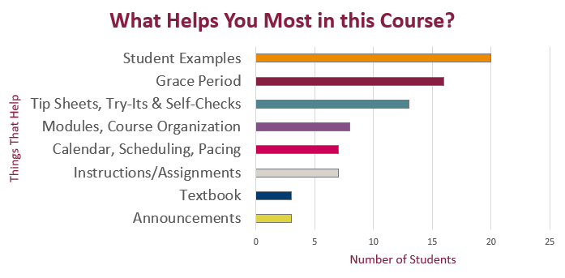

HEADLINE
Example content to replace
HEADLINE
Example content to replace

Your Feedback on the Course

The Check-In Survey before Spring Break asked you what was helping you the most in this course. The bar chart on the left shows the most frequent answers you gave.
Student examples for the full drafts was mentioned most frequently. The grace period came in a close second. So I will definitely keep those options in place.
The only surprise in the feedback was that someone suggested Spring Break was going to help the most. Unfortunately I can’t take credit for that.
What Can I Do to Help You?
The Check-In Survey before Spring Break also asked you to tell me what I can do to help you reach your goals in the course. Your answers are listed on the right.
| What You Said | My Response |
|---|---|
|
These requests are easy. Of course I will keep giving you feedback, posting Announcements, and sending out reminders. |
|
I’ll review the Try-Its and try to add more directions, beginning with the Week10 work (next week). I don’t want to change an activity while people are working on it. That gets confusing. As for motivation, examples, and videos, I will look for more and add what I can. If you find something you think would help others in the course, let me know. |
|
There’s a better way to see all the work and when it’s due. Use the Calendar in Canvas, which shows all the due work for the course on the day it’s due. Be sure to click the checkbox for this course in the right sidebar. Watch the how-to video on the Canvas Calendar for more info. |
|
I need more information from you for some of the other ideas. I will add some questions to the Week 10 Check-In Survey (next week’s) to learn about what will help. |
|
This course runs on a contract grade system. There is no number to add extra credit to. If you want a higher grade, you need to ensure that you complete all the work listed on the Effort Expectations chart. |
|
I posted Progress Report for March 20 (Course Grade Estimate to Date) on Monday, which takes care of this request. See the announcement for details on how to find your estimate. |